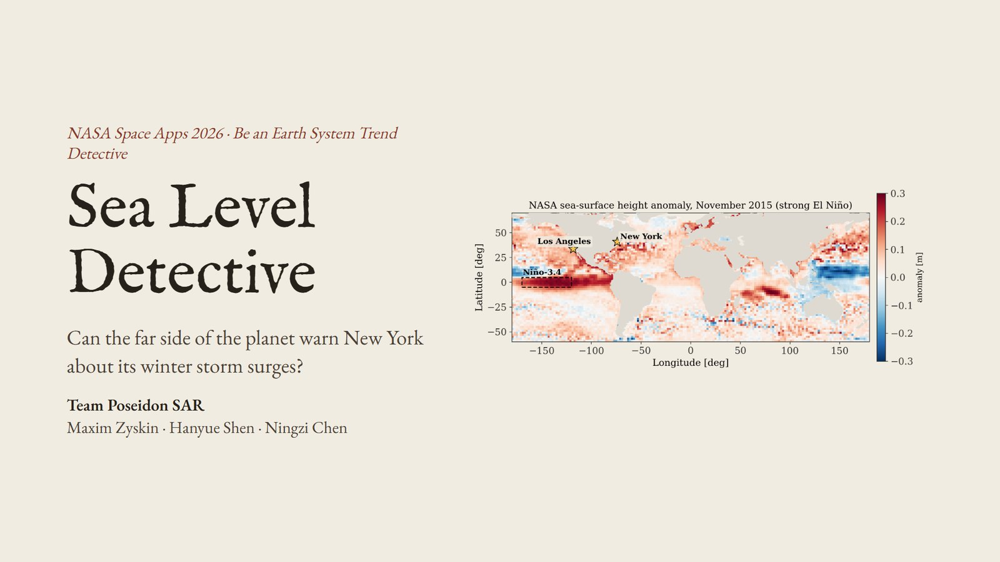
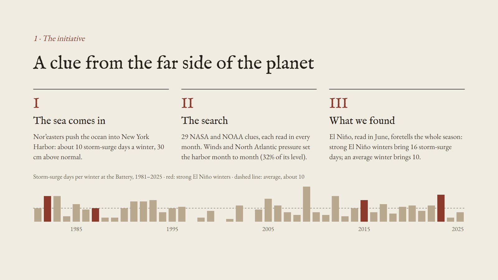
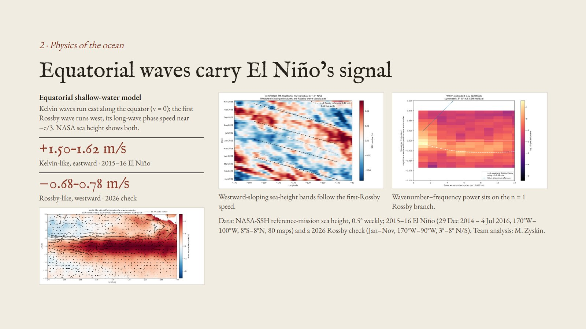
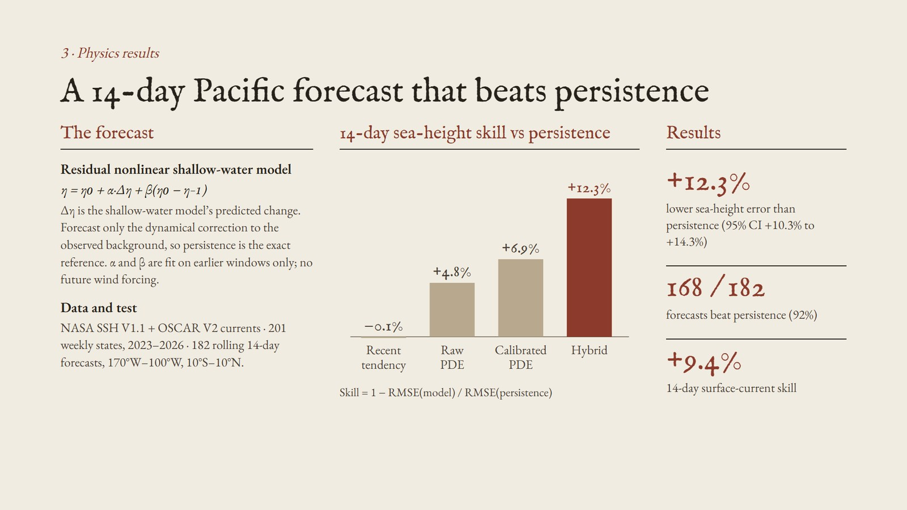
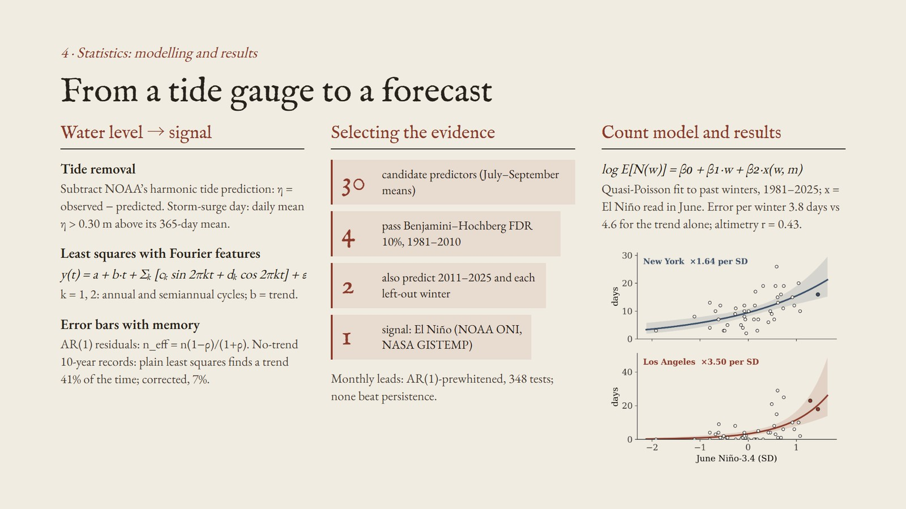

NASA Space Apps 2026 · Team Poseidon SAR
Sea Level Detective in five slides
Maxim Zyskin, Hanyue Shen and Ningzi Chen





Use the arrows, the dots or your keyboard’s ← → keys.
NASA Space Apps 2026 · Team Poseidon SAR
Maxim Zyskin, Hanyue Shen and Ningzi Chen





Use the arrows, the dots or your keyboard’s ← → keys.